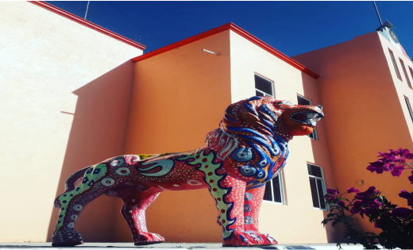
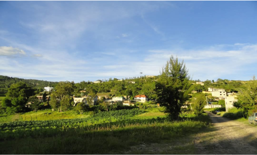
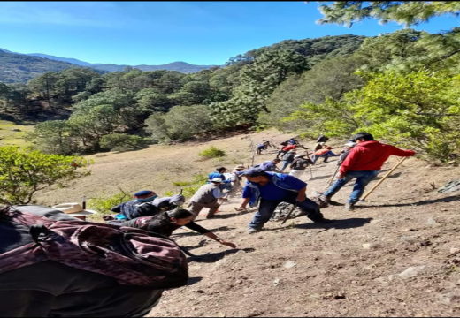

|
| |
| Historia Ubicacion Contacto Curiosidades galeria | San Isidro era un núcleo rural de santa Maria cuquila, y en el año de 1949 la gente que habitaba en este núcleo tomo la decisión de apartarse del centro de santa María cuquila, para fundad su misma comunidad y ya no caminar hasta Cuquila.  ya que la gente daba servicio hasta allá y les quedaba un poco retirado ya que tenías que ir caminando, fue así que se propuso al ciudadano Bernabé López como agente de policía para el año 1950.  se construyeron casas de adobe para la escuela primaria general Francisco Villa que daban clases hasta tercer grado de primaria, la misma gente de la comunidad daba las clases para que así los niños aprendieran, y así el pueblo fue creciendo, empezaron a solicitar apoyos como la brecha que viene de cuquila a san Isidro, agua potable, la red de energía eléctrica.  algo que tiene la comunidad de san Isidro son minas de varita, carbón y arenilla para barro, en el año de 1986 llegaron algunos ingenieros a trabajar con maquinarias para extraer el mineral de varita y carbón, dónde la misma gente del pueblo trabajaba y se les pagaba, hasta que un día la gente de San Isidro decidió sacar a las personas que explotaban las minas y fue así como quedaron abandonadas, el pueblo fue creciendo y subiendo de rango, al día de hoy cuenta con 262 habitantes y la comunidad sigue creciendo y adquiriendo nuevos apoyos .
|